要判定两条直线是否平行，我们无法直接看到它们在无限延长的过程中是否相交。那么，从画平行线的过程中，你能得到什么启示呢？
如图4.2.5，在画平行线时，三角板紧靠直尺的一边和紧靠直线 \(a\) 的一边所成的角在移动前后构成了一对同位角，其大小始终不变。因此，只要保持同位角相等，就可以保证画出的直线与已知直线平行。
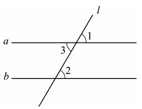
于是得到基本事实：两条直线被第三条直线所截，如果同位角相等，那么这两条直线平行。简称为：同位角相等，两直线平行。
如图4.2.5，如果内错角相等，即 \(\angle 2 = \angle 3\)，由于 \(\angle 1 = \angle 3\)（对顶角相等），因此 \(\angle 1 = \angle 2\)。根据同位角相等，可得 \(a \mathrel{/\mkern-5mu/} b\)。所以：
两条直线被第三条直线所截，如果内错角相等，那么这两条直线平行。简称为：内错角相等，两直线平行。
如图4.2.5.3，如果同旁内角互补，即 \(\angle 2 + \angle 4 = 180^\circ\)，由于 \(\angle 1 + \angle 4 = 180^\circ\)（邻补角），可得 \(\angle 1 = \angle 2\)（等角的补角相等）。根据同位角相等，可得 \(a \mathrel{/\mkern-5mu/} b\)。因此：
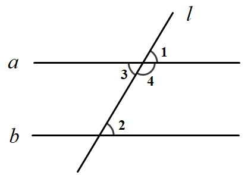
两条直线被第三条直线所截，如果同旁内角互补，那么这两条直线平行。简称为：同旁内角互补，两直线平行。
📌 平行线的判定方法：
我们已经知道利用尺规作图可以作一条线段等于已知线段，以及作一个角等于已知角的方法。那么，如何过已知直线外一点作该直线的平行线呢？
由平行线的判定方法，你自然会想到在直线 \(AB\) 和直线外一点 \(P\) 处，设法如图4.2.6那样构造一对相等的同位角 \(\angle 1\) 和 \(\angle 2\)，那样就可以作出所需要的平行线了。
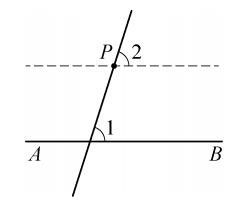
如图4.2.7，已知直线 \(AB\)，以及直线 \(AB\) 外一点 \(P\)，试利用尺规作图按下列作法准确地过点 \(P\) 作直线 \(AB\) 的平行线：
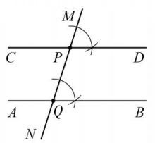
如图4.2.8，直线 \(a, b\) 被直线 \(l\) 所截，已知 \(\angle 1 = 115^\circ\)，\(\angle 2 = 115^\circ\)，直线 \(a, b\) 平行吗？为什么？
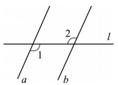
\(\because \angle 1 = 115^\circ\)，\(\angle 2 = 115^\circ\) (已知)，
\(\therefore \angle 1 = \angle 2\) (等量代换).
\(\therefore a \mathrel{/\mkern-5mu/} b\) (内错角相等，两直线平行).
“推理”是数学的一种基本思想，包括归纳推理和演绎推理。归纳推理是一种从特殊到一般的推理，我们通过一些探索、操作，得到某些猜想的过程就是在做这样的推理。数与代数中由一些具体的结果，归纳得到一般的结论，也是这样的推理。演绎推理是一种从一般到特殊的推理，它借助于一些公认的基本事实及由此推导得到的结论，通过推断，说明最后结论的正确。例1、例2、例3采用的就是演绎推理。
在书写推理过程时，我们常用符号 “\(\because\)” 表示“因为”，“\(\therefore\)” 表示“所以”，使表达更加简洁。例如上面的例题解答中就使用了这些符号。
如图4.2.9，在四边形 \(ABCD\) 中，已知 \(\angle B = 60^\circ\)，\(\angle C = 120^\circ\)，\(AB\) 与 \(CD\) 平行吗？\(AD\) 与 \(BC\) 平行吗？
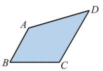
\(\because \angle B = 60^\circ\)，\(\angle C = 120^\circ\) (已知)，
\(\therefore \angle B + \angle C = 180^\circ\) (等式的性质).
\(\therefore AB \mathrel{/\mkern-5mu/} CD\) (同旁内角互补，两直线平行).
\(\because\) 已知条件不足，无法判定 \(AD\) 与 \(BC\) 是否平行。
如图4.2.10，在同一平面内，直线 \(CD\)、\(EF\) 均与直线 \(AB\) 垂直，点 \(D\)、\(F\) 为垂足。试判断 \(CD\) 与 \(EF\) 是否平行。
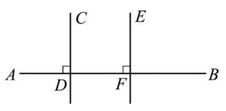
\(\because CD \perp AB\)，\(EF \perp AB\) (已知)，
\(\therefore \angle ADC = \angle AFE = 90^\circ\).
\(\therefore CD \mathrel{/\mkern-5mu/} EF\) (同位角相等，两直线平行).
由此得到：同一平面内，垂直于同一条直线的两条直线平行。
1. 根据题图，在下列解答中，填上适当的理由：
(1) \(\because \angle B = \angle 1\) (已知)，\(\therefore AD \mathrel{/\mkern-5mu/} BC\)
( ).
(2) \(\because \angle D = \angle 1\) (已知)，\(\therefore AB \mathrel{/\mkern-5mu/} CD\)
( ).
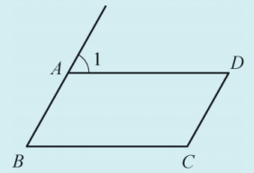
(1) 同位角相等，两直线平行； (2) 内错角相等，两直线平行。
2. 根据题图，在下列解答中，填空：
(1) \(\because \angle BAD + \angle ABC = 180^\circ\) (已知)，
\(\therefore\)
( ) \(\mathrel{/\mkern-5mu/}\)
( ) (同旁内角互补，两直线平行).
(2) \(\because \angle BCD + \angle ABC = 180^\circ\) (已知)，
\(\therefore\)
( ) \(\mathrel{/\mkern-5mu/}\)
( ) (同旁内角互补，两直线平行).
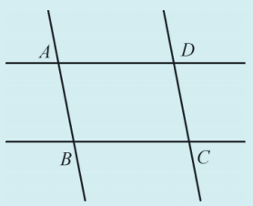
(1) \(AD \mathrel{/\mkern-5mu/} BC\)； (2) \(AB \mathrel{/\mkern-5mu/} CD\)。
3. 根据图中给出的条件，指出互相平行的直线和互相垂直的直线。
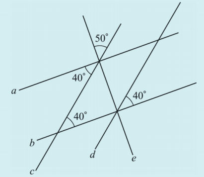
a∥b，c∥d，a⊥e，b⊥e
我们曾利用手中的直尺和三角板，过直线外一点画出与已知直线平行的直线，你可能还见过木工师傅用角尺画出平行线的方法。（如图4.2.12）
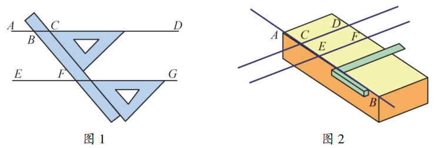
两者的原理一样，都是依据平行线的判定定理：同位角相等，两直线平行。
小明还发现了另一种折纸的方法：
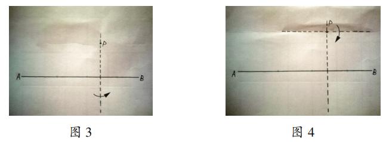
小明由此断定第二条折痕就是所求的直线，即过点 \(P\) 平行于已知直线 \(AB\) 的直线。你知道小明画平行线方法的理由吗？
第一次折叠使左右两边重合，折痕垂直于 \(AB\)（即第一条折痕是 \(AB\) 的垂线）；第二次折叠使上下两部分重合，折痕垂直于第一条折痕。根据“垂直于同一条直线的两条直线平行”，第二条折痕平行于 \(AB\)。
你还能找到其他画平行线的方法吗？上网搜一搜，动脑想一想，动手试一试、画一画，大家一起交流，相信一定能找到更多画平行线的方法！
转化思想： 将平行线的判定转化为角的数量关系（相等或互补）。
推理思想： 从已知条件出发，依据基本事实推导结论。
模型思想： 将实际问题抽象为“三线八角”模型进行判断。
✨ 由角的关系推平行，开启几何推理之门 ✨